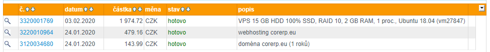
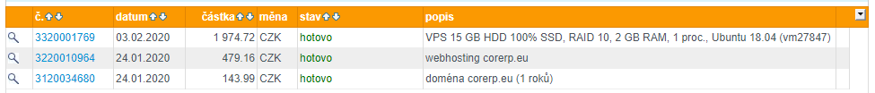

{kind=link}
Byl jsem admin... :D Na serveru Core RP sem začal hrát aktivně někdy v Listopadu minulého roku. V tu dobu měl ještě Core pomyslnou "značku" kvalitního RP serveru.
Kvalita kvůli které jsem na Core přišel, trvala až do doby, kdy z projektu odešel bývalý project manager Perník.
Jakmile se veškeré věci (server,web, apod.) začaly dělat znova, nabídl jsem svoji pomocnou ruku a základní zkušenost.. a společně s DarkReaperem jsem pro Core udělal fórum.
Poté, co mi byla nabídnuta možnost být Test Admin, jsem ji po krátkém váhání přijal a za nějaký čas jsem se nabídl, že předělám nebo udělám nový web, samozřejmě na základě dohody nejvyšších (v té době Simplex, Andrew a Dave[pěstička]). Přemýšlel jsem, jak web udělat nebo případně použít nějaký template. Tak jsem hledal a našel. Našel jsem template na parádní web pro e-sport týmy. Web se "nejvyšším" líbil a tak byl zakoupen a já se dal do práce. Na přepracování templatu jsem pracoval asi týden - od rána do doby, kdy jsem šel spát. Týden se vám možná některým zdá moc, ale měl jsem pouze základní znalosti a co jsem nevěděl, jsem se učil za pochodu. Pracoval jsem pod nátlakem, protože jsem v té době byl test admin a tak jsem musel dělat i nějaké adminské povinnosti. Jsem taková povaha, že jak v něčem nevidím zisk, tak ztrácím morálku a motivaci. A tak mi bylo slíbeno od majitele projektu CoreRP Simplexe, že jak mile se CoreRP peněžně zotaví a bude mít nějaký větší "budget", tak z toho něco málo za mou práci dostanu, ale že to nebude žádná astronomická částka a tak jsem měl na základě slíbeného slova dostatečnou motivaci.
Týden šel za týdnem a od Simplexe nebyly žádné zprávy o zmiňované "odměně" za práci na webu.
Asi v půlce dubna jsem byl se Simplexem ve vedení, kde jsem se ho zeptal jestli daný slib platí a nebo neplatí. Bylo mi řečeno, že má majitel PayPalu Dave(pěstička) momentálně PayPal zablokovaný a tak teď poslat nic nemůže. (PayPal byl zablokován z důvodu že si ho Dave založil ještě předtím než mu bylo 18 a díky velkým částkám které na jeho účet přícházely byl vyzván k poslání své občanky PayPalu, Dave tak učinil a jeho předchozí PayPal mu byl zablokován).
Kolik Core vydělal od poloviny Února se dozvíte v další kategorii. Nebyly to úplně malé částky a tak si na základě toho beru všechnu moji práci, protože nechci nadále spolupracovat s tímto projektem.
Za duben si Simplex vydělal do kapsy odhadem 40 000 kč a nebyl schopen sám od sebe poslat peníze někomu, kdo dělá v podstatě jednu z nejdůležitějších propagací celého projektu.
Jakmile se veškeré věci (server,web, apod.) začaly dělat znova, nabídl jsem svoji pomocnou ruku a základní zkušenost.. a společně s DarkReaperem jsem pro Core udělal fórum.
Poté, co mi byla nabídnuta možnost být Test Admin, jsem ji po krátkém váhání přijal a za nějaký čas jsem se nabídl, že předělám nebo udělám nový web, samozřejmě na základě dohody nejvyšších (v té době Simplex, Andrew a Dave[pěstička]). Přemýšlel jsem, jak web udělat nebo případně použít nějaký template. Tak jsem hledal a našel. Našel jsem template na parádní web pro e-sport týmy. Web se "nejvyšším" líbil a tak byl zakoupen a já se dal do práce. Na přepracování templatu jsem pracoval asi týden - od rána do doby, kdy jsem šel spát. Týden se vám možná některým zdá moc, ale měl jsem pouze základní znalosti a co jsem nevěděl, jsem se učil za pochodu. Pracoval jsem pod nátlakem, protože jsem v té době byl test admin a tak jsem musel dělat i nějaké adminské povinnosti. Jsem taková povaha, že jak v něčem nevidím zisk, tak ztrácím morálku a motivaci. A tak mi bylo slíbeno od majitele projektu CoreRP Simplexe, že jak mile se CoreRP peněžně zotaví a bude mít nějaký větší "budget", tak z toho něco málo za mou práci dostanu, ale že to nebude žádná astronomická částka a tak jsem měl na základě slíbeného slova dostatečnou motivaci.
Týden šel za týdnem a od Simplexe nebyly žádné zprávy o zmiňované "odměně" za práci na webu.
Asi v půlce dubna jsem byl se Simplexem ve vedení, kde jsem se ho zeptal jestli daný slib platí a nebo neplatí. Bylo mi řečeno, že má majitel PayPalu Dave(pěstička) momentálně PayPal zablokovaný a tak teď poslat nic nemůže. (PayPal byl zablokován z důvodu že si ho Dave založil ještě předtím než mu bylo 18 a díky velkým částkám které na jeho účet přícházely byl vyzván k poslání své občanky PayPalu, Dave tak učinil a jeho předchozí PayPal mu byl zablokován).
Kolik Core vydělal od poloviny Února se dozvíte v další kategorii. Nebyly to úplně malé částky a tak si na základě toho beru všechnu moji práci, protože nechci nadále spolupracovat s tímto projektem.
Za duben si Simplex vydělal do kapsy odhadem 40 000 kč a nebyl schopen sám od sebe poslat peníze někomu, kdo dělá v podstatě jednu z nejdůležitějších propagací celého projektu.
V prvé řadě by bylo důležité říct, že chod serveru stojí měsíčně max. cca. 4 000 kč a v první polovině února byl stav účtu něco přes 9 000kč.
Výdělky:
Druhá polovina února: 920 EUR (25 000Kč)
Březen: 480 EUR (13 000Kč)
Duben: 1725 EUR (47 000Kč)
Částky jsou odhadem, přesnou částku si můžete spočítat v kategorii odkaz na chaty ze dne 03.05.2020 v souboru "vip-k-predani".
Zde je roční cena za VPS pro WEB: 
Zároveň jednou z pravd je, že Core podvádí hráče. V této nahrávce hovoří Simplex s Perníkem o kavárně jejichž reálná cena je zhruba 70$, ovšem prodaná je za 100$ což činní zisk 30$
ZÁZNAM Z HOVORU
Výdělky:
Druhá polovina února: 920 EUR (25 000Kč)
Březen: 480 EUR (13 000Kč)
Duben: 1725 EUR (47 000Kč)
Částky jsou odhadem, přesnou částku si můžete spočítat v kategorii odkaz na chaty ze dne 03.05.2020 v souboru "vip-k-predani".
Zde je roční cena za VPS pro WEB: 
Zároveň jednou z pravd je, že Core podvádí hráče. V této nahrávce hovoří Simplex s Perníkem o kavárně jejichž reálná cena je zhruba 70$, ovšem prodaná je za 100$ což činní zisk 30$
ZÁZNAM Z HOVORU
Core RP se jako projekt v současné chvíli těší z přítomnosti "velkých osobností" v podobě slavných streamerů. Ať už jsou to stálí hráči jako Bauchyc, Affected a nebo Jirka Král, který se na server přidal přednedávnem.
Pomineme-li to, že si WL dělal před více jak rokem.. a narozdíl od jiných NEMUSEL procházet repohovorem (protože měl někdo strach, že by se na to vysral, že jo - a Jirku prostě potřebovali). Následkem čehož pak vznikly víc, než trapné situace, jako když se Jirka zeptal na streamu chatu: "Co je to WL?" a nebo "Co je to gross?", což jsou věci, bez kterých by běžný hráč ani neprošel pohovorem.
Zanedlouho poté se přidala i LadyKiller a Selassie se svým otcem, kteří se společně s výše zmíněnými, (pravděpodobně nevědomky) stali dojnými "krávami" na tomto serveru.
Pochopitelně zde streameři dostanou cokoli, na co si ukáží. Obyčejní hráči, čekají na dev jejich frakce několik dní až týdnů, ale streameři mají všechno hned. Možná si říkáte.. "To je ale v pořádku, zaslouží si to, propagují server..", ale kde je skutečně pravda a jak se CoreRP odvděčuje streamerům za jejich propagaci? A jak nahlíží na streamery samotný majitel serveru? Posuďte sami.
Obrázky najdete ZDE
Pomineme-li to, že si WL dělal před více jak rokem.. a narozdíl od jiných NEMUSEL procházet repohovorem (protože měl někdo strach, že by se na to vysral, že jo - a Jirku prostě potřebovali). Následkem čehož pak vznikly víc, než trapné situace, jako když se Jirka zeptal na streamu chatu: "Co je to WL?" a nebo "Co je to gross?", což jsou věci, bez kterých by běžný hráč ani neprošel pohovorem.
Zanedlouho poté se přidala i LadyKiller a Selassie se svým otcem, kteří se společně s výše zmíněnými, (pravděpodobně nevědomky) stali dojnými "krávami" na tomto serveru.
Pochopitelně zde streameři dostanou cokoli, na co si ukáží. Obyčejní hráči, čekají na dev jejich frakce několik dní až týdnů, ale streameři mají všechno hned. Možná si říkáte.. "To je ale v pořádku, zaslouží si to, propagují server..", ale kde je skutečně pravda a jak se CoreRP odvděčuje streamerům za jejich propagaci? A jak nahlíží na streamery samotný majitel serveru? Posuďte sami.
Obrázky najdete ZDE
Jak to asi vypadá, když Admin Team na CoreRP zcela úmyslně forcuje RP hráčům, jen proto, že jim jejich RP není pohodlné?
Typickým příkladem je frakce Elysian Brigada a věc, která se přihodila hráči Leginrok, jehož postava, která byla vůdcem zmíněné frakce, dostala CK. Pravidlo praví, že hráč nesmí mít s novou postavou nelegální interakci se stejnou frakcí, a to po dobu 14ti dnů. Leginrok si tedy požádal o postavu s tím, že pokud se mu schválí, vyčká, dokud nevyprší 14 dní.. a pak převezme frakci, pod svá křídla s novým příběhem.
Postava byla schválena, načež si pak náš milý Admin Team uvědomil, že ty "zkurvený rusáky" vlastně hrozně nesnáší. Ale co teď? Postava byla schválena. Byly dvě možnosti. První, že mu postavu zpětně zamítnou a budou za totální čůráky (což jsou stejně, ale whatever). A druhá, že ho prostě nechají erpit. Po dlouhých dohadech v A-teamu, které mimochodem přikládám níže, se AT rozhodl zcela nepochopitelně. Dave, jinak také zvaný "Pěstička", osobně Leginroka kontaktoval, a vyhrožoval mu, že pokud nebude jeho nová postava, podle jejich ideálů, tak mu jí prostě smažou.
Jestli si říkáte, že je to sračka. Tak to pravděpodobně bude tím, že to sračka je. Obrázek si udělejte sami.
Zde si můžete přečíst celý rozhovor Pěstičky a Leginroka a zároveň přikládám zoufalou konverzaci z Admin Chatu, kde mají admini strach, že pokud nechají Rusy erpit, tak jim odejdou jejich streamerský princezny, bez kterých by se dle jejich konverzace evidentně neobešli. Úplně na konci můžete vidět, jak Gucio (test admin) píše, že se jich zkusí zbavit pomocí nějakého "šméčka". Obviously vynucování CK z OOC důvodů. Nebere se právě tohle jako mixing? Co myslíte?
Fotky k tématu ZDE
Typickým příkladem je frakce Elysian Brigada a věc, která se přihodila hráči Leginrok, jehož postava, která byla vůdcem zmíněné frakce, dostala CK. Pravidlo praví, že hráč nesmí mít s novou postavou nelegální interakci se stejnou frakcí, a to po dobu 14ti dnů. Leginrok si tedy požádal o postavu s tím, že pokud se mu schválí, vyčká, dokud nevyprší 14 dní.. a pak převezme frakci, pod svá křídla s novým příběhem.
Postava byla schválena, načež si pak náš milý Admin Team uvědomil, že ty "zkurvený rusáky" vlastně hrozně nesnáší. Ale co teď? Postava byla schválena. Byly dvě možnosti. První, že mu postavu zpětně zamítnou a budou za totální čůráky (což jsou stejně, ale whatever). A druhá, že ho prostě nechají erpit. Po dlouhých dohadech v A-teamu, které mimochodem přikládám níže, se AT rozhodl zcela nepochopitelně. Dave, jinak také zvaný "Pěstička", osobně Leginroka kontaktoval, a vyhrožoval mu, že pokud nebude jeho nová postava, podle jejich ideálů, tak mu jí prostě smažou.
Jestli si říkáte, že je to sračka. Tak to pravděpodobně bude tím, že to sračka je. Obrázek si udělejte sami.
Zde si můžete přečíst celý rozhovor Pěstičky a Leginroka a zároveň přikládám zoufalou konverzaci z Admin Chatu, kde mají admini strach, že pokud nechají Rusy erpit, tak jim odejdou jejich streamerský princezny, bez kterých by se dle jejich konverzace evidentně neobešli. Úplně na konci můžete vidět, jak Gucio (test admin) píše, že se jich zkusí zbavit pomocí nějakého "šméčka". Obviously vynucování CK z OOC důvodů. Nebere se právě tohle jako mixing? Co myslíte?
Fotky k tématu ZDE
Lidé by se měli zamyslet nad tím, že ke Coru nepatří žádný majitel. I když je majitel Simplex, nikde nevyužívá své jméno. Může být jen několik důvodu, proč tomu tak je - proč se nechce ukazovat, že mu to právně patří.
Proč nechce Simplex, aby PayPal patřil jemu? A žebrá po ostatních členech teamu, aby byl použit jejich paypal. Možná třeba proto, že Simplex dost dobře ví, že se z těchto získaných peněz nic nedaní. Vše jde do kapes pouze dvoum lidem - Dave (pěstička) a Simplex. Také zde řeknu, že žádné z těchto peněz nejdou do kupovaných interiérů. Od Perníkova odchodu nebyli koupené žádné interiéry od čistého prodejce. Jediné co řeknu, že pouze Perník ví, proč Simplex nechce mít svůj paypal účet a rád to zde zmíním, ačkoliv nejsem jeho příznivec, Perník nebyl ten nejhorší, jak bylo řečeno.... Perník byl menší zlo.
K Simplexovi rád dodám, že je to notorický lhář, který rád maže med kolem huby všem, komu může - ať už svým příznivcům v teamu, tak lidem. Tvrdí, že vše dělá pouze pro komunitu. Ale komunita tu nehraje žádnou roli. Hrajou tu roli pouze prachy, které si jako strýček Skrblík schovává pouze pro sebe. Budu k Vám upřímný, ať už se mi vysmějete nebo ne, CoreRP není o hráčích a komunitě, ale o penězích, je to prostě solidní kšeft. Je smutný, že nikdo tohle nevidí, teď se bude pouze možná smát, ale někteří si uvědomí, že něco na tom asi je - a v to já doufám. Je mi líto, že vy hráči podporujete tuhle továrnu na faleš. Je mi to líto, protože ačkoliv zde píšu tyhle věty, podporovat se to bude dál. Jste jenom ovce a tak Vás rádi v admin-talku nazývají. Do teamu se dostávají pouze přátelé členů a-teamu. Proč by taky ne - budou poslouchat na slovo.
Na závěr chci dodat, že by se měli hráči zamyslet nad tím koho a co podporují. Je opravdu CoreRP o RP? Koho vlastně podporujeme? Podporujeme společnou komunitu, která má tvořit RP? Nebo podporujeme vyšší moc, která koná dvojím metrem? Jsme pro adminy rovnými hráči? Nebo jen "číslo" . Viz. Ozzy rád dodává, že je Core stejně full. Nejde přece už o hráče a kvalitu, jde o čísla a kvantitu.
Obrázek si můžete udělat z těchto podkladů sami.
Proč nechce Simplex, aby PayPal patřil jemu? A žebrá po ostatních členech teamu, aby byl použit jejich paypal. Možná třeba proto, že Simplex dost dobře ví, že se z těchto získaných peněz nic nedaní. Vše jde do kapes pouze dvoum lidem - Dave (pěstička) a Simplex. Také zde řeknu, že žádné z těchto peněz nejdou do kupovaných interiérů. Od Perníkova odchodu nebyli koupené žádné interiéry od čistého prodejce. Jediné co řeknu, že pouze Perník ví, proč Simplex nechce mít svůj paypal účet a rád to zde zmíním, ačkoliv nejsem jeho příznivec, Perník nebyl ten nejhorší, jak bylo řečeno.... Perník byl menší zlo.
K Simplexovi rád dodám, že je to notorický lhář, který rád maže med kolem huby všem, komu může - ať už svým příznivcům v teamu, tak lidem. Tvrdí, že vše dělá pouze pro komunitu. Ale komunita tu nehraje žádnou roli. Hrajou tu roli pouze prachy, které si jako strýček Skrblík schovává pouze pro sebe. Budu k Vám upřímný, ať už se mi vysmějete nebo ne, CoreRP není o hráčích a komunitě, ale o penězích, je to prostě solidní kšeft. Je smutný, že nikdo tohle nevidí, teď se bude pouze možná smát, ale někteří si uvědomí, že něco na tom asi je - a v to já doufám. Je mi líto, že vy hráči podporujete tuhle továrnu na faleš. Je mi to líto, protože ačkoliv zde píšu tyhle věty, podporovat se to bude dál. Jste jenom ovce a tak Vás rádi v admin-talku nazývají. Do teamu se dostávají pouze přátelé členů a-teamu. Proč by taky ne - budou poslouchat na slovo.
Na závěr chci dodat, že by se měli hráči zamyslet nad tím koho a co podporují. Je opravdu CoreRP o RP? Koho vlastně podporujeme? Podporujeme společnou komunitu, která má tvořit RP? Nebo podporujeme vyšší moc, která koná dvojím metrem? Jsme pro adminy rovnými hráči? Nebo jen "číslo" . Viz. Ozzy rád dodává, že je Core stejně full. Nejde přece už o hráče a kvalitu, jde o čísla a kvantitu.
Obrázek si můžete udělat z těchto podkladů sami.